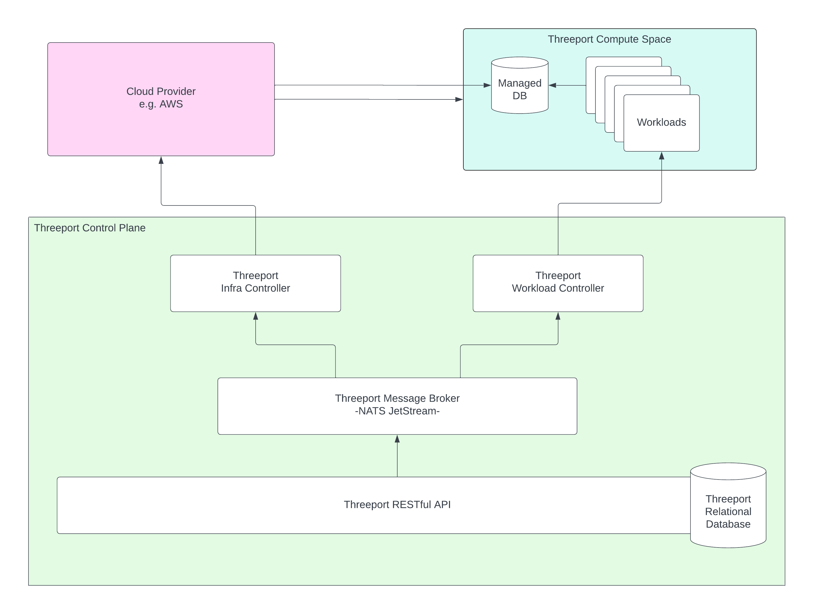
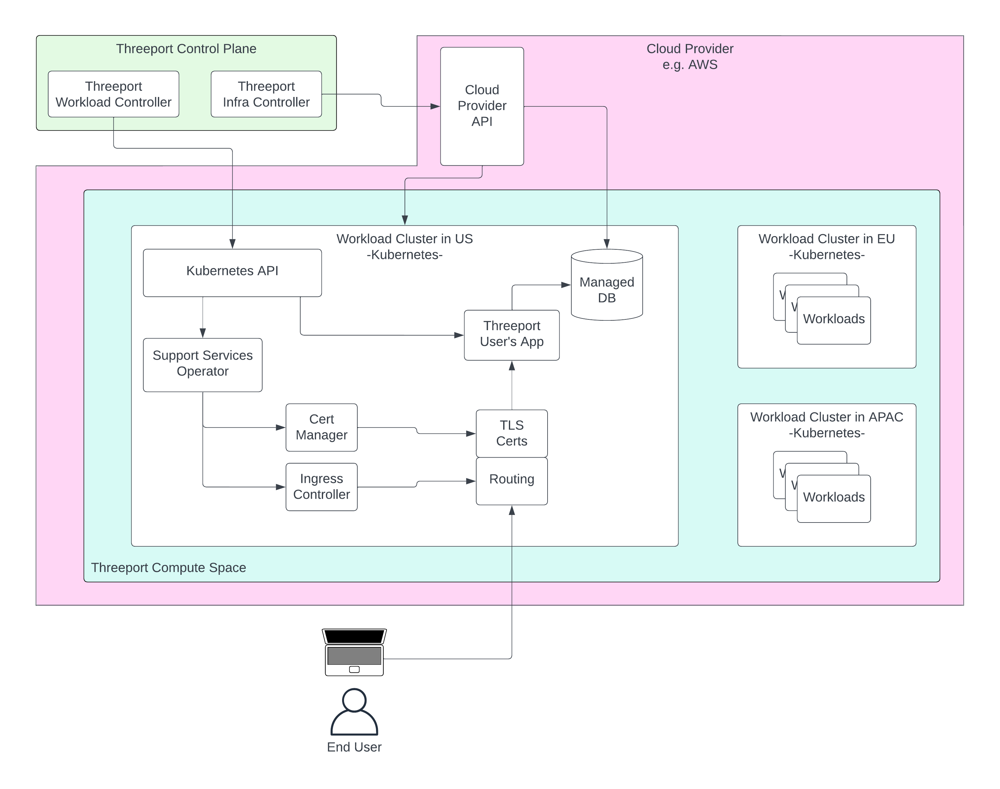

Technology Stack¶
This document provides a description of the technologies and open source projects used in Threeport.
Control Plane¶
The Threeport control plane manages user workloads and their dependencies. Users declare the configuration and dependencies for their apps to the control plane and the control plane takes care of the rest. This includes provisioning infrastructure as needed, installing supporting services for the app, installing direct dependencies of the app, and spinning up the components of the app itself.

RESTful API¶
The Threeport API is the heart of the control plane. All clients and control plane components coordinate their activity and store persistent data through the API.
The API is written with the Go programming language. We chose Go because of its portability, efficiency, built-in concurrency, standard library and ecosystem of 3rd party libraries. It has become the default programming language for cloud native systems and has been used extensively in open source projects like Docker and Kubernetes.
We use the Echo framework because it has useful, performant routing and middleware, is easily extensible and does not contain excessive, obstructive features.
API Database¶
The Threeport API uses CockroachDB for data persistence. We chose to use a SQL database in general for its transactional and relational capabilities. This allows us to make changes to related objects simultaneously safely so that all objects are changed together or none of them are changed. We chose CockroachDB in particular for its distributed capabilities. Threeport offers a global control plane and so disaster survivability is a primary concern. We found CockroachDB to be the best implementation of a distributed SQL database.
Threeport Controllers¶
Threeport controllers provide the logic and state reconciliation for the control plane. They are written in Go and model some engineering principles from Kubernetes controllers. When a change is made to an object in the Threeport API, the relevant controller is notified so that it can reconcile the state of the system with the desired state configured for that object. The primary feature that differentiates Threeport controllers from those in Kubernetes is that Threeport controllers are horizontally scalable.
Message Broker¶
The horizontal scalability of Threeport controllers is enabled by the NATS messaging system. The API uses the NATS server to notify controllers of changes in the system. The controllers use NATS to requeue reconciliation as needed (when unmet conditions prevent immediate reconciliation) and to place distributed locks on particular objects during reconciliation.
Infrastructure Management¶
Threeport currently supports AWS for infrastructure management. We use the v2 SDK for the Go programming language to manage AWS resources. We do not use any intermediate toolchain or libraries such as Pulumi, Crossplane or Terraform. These are capable tools for certain use cases. However, using the AWS SDK directly gives us the most flexibility and ensures we don't encounter any unsupported operations we might need to perform in managing cloud resources for Threeport users.
Compute Space¶
The Threeport compute space is where applications actually run.

Compute Clusters¶
The compute space is populated by Kubernetes clusters. Threeport will deploy as many clusters, in whichever region, on whichever supported cloud provider is needed to meet the user's app requirements.
We use Kubernetes to orchestrate the containerized software that comprises the user's apps and their workload dependencies. Kubernetes is a very capable system that can manage thousands of workloads per cluster, autoscale those workloads and reliably self-heal when disruptions occur, e.g. machine failures. The Threeport control plane declares state to Kubernetes and lets it manage the complex minutia of container orchestration.
Supporting Services¶
Supporting services run in each compute space cluster to serve basic, common requirements for the apps that run there. This includes things like request routing, TLS termination, DNS record management and secrets storage.
We use the Support Services Operator to manage the installation of these utilities. It is a Kubernetes Operator that extends the Kubernetes control plane of each compute space cluster to install and manage supporting services as they become needed by tenant workloads created by Threeport users.